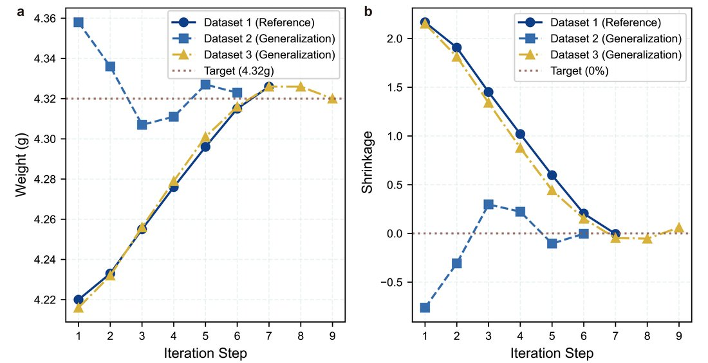
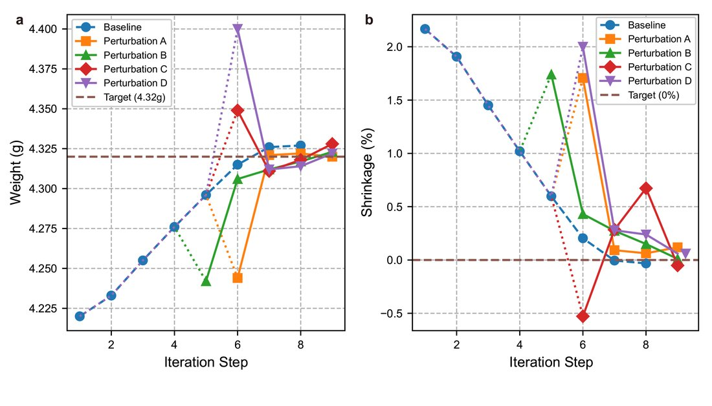
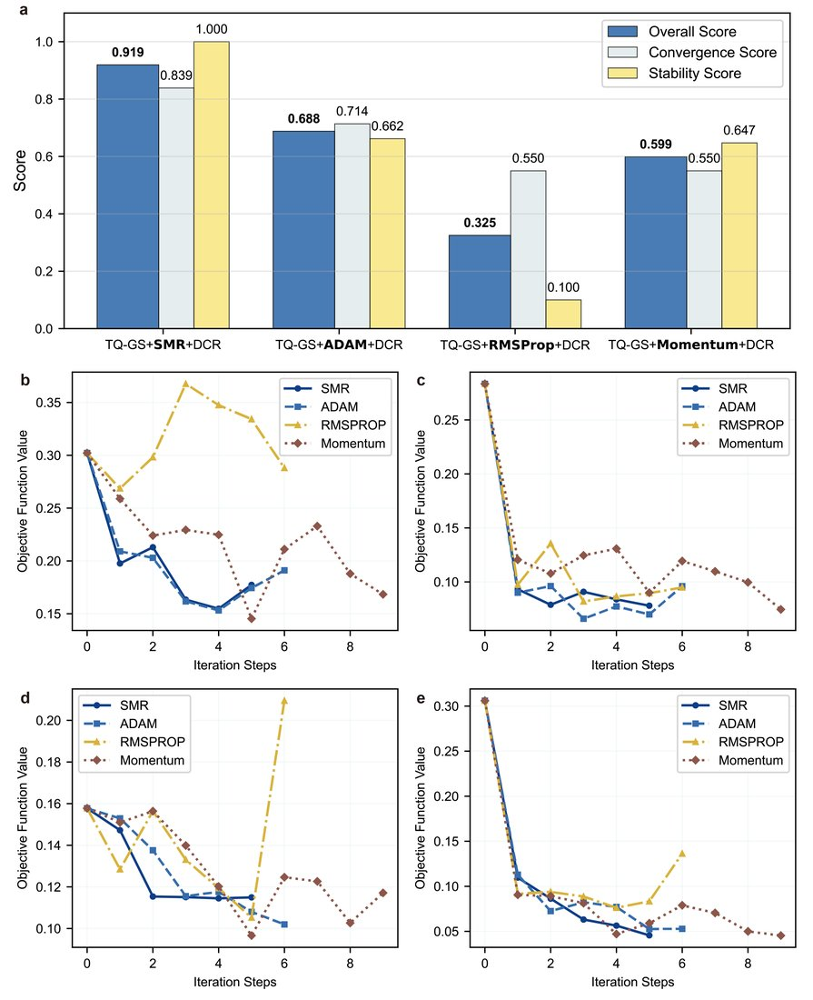
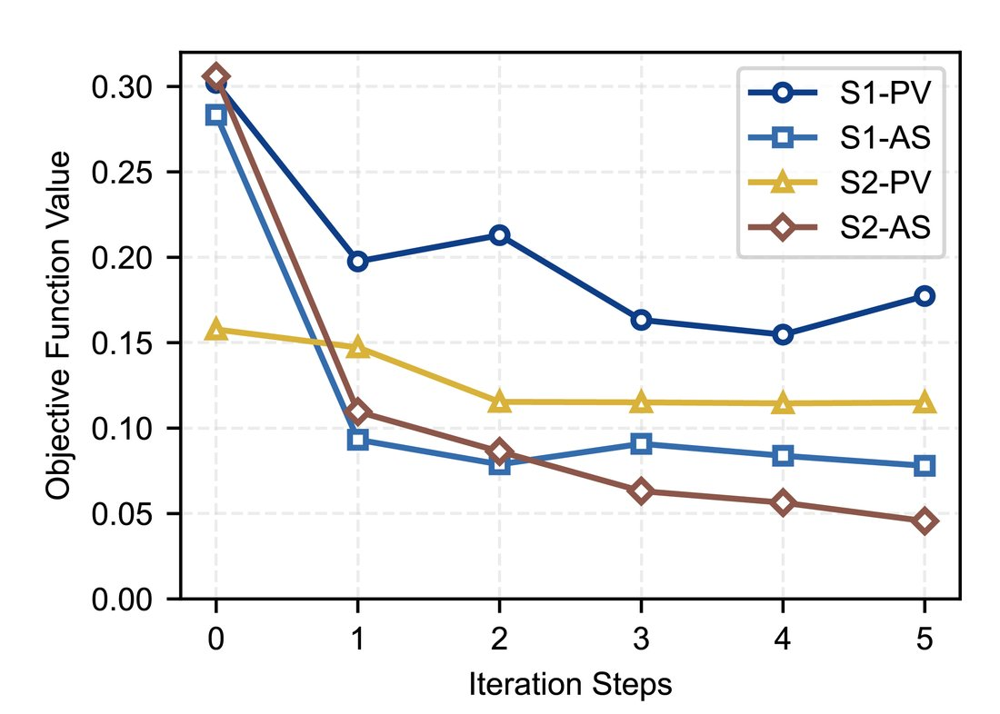

少样本多目标工艺参数优化框架 GraSEMFew-shot Multi-objective Process Optimization (GraSEM)
针对超精密制造（光学镜片等）中"参数-质量关系难建模、多目标冲突、收敛慢且不稳"的痛点，提出无模型多目标优化框架 GraSEM。它的少样本特性体现在两方面：只需少量历史批次数据、且只用很少几次实机试验即可优化——用 Taylor-QR 梯度求解器从病态历史数据中重构不可观测梯度，用分阶段动量调节器自适应调步长，用解耦冲突解决器动态分配多目标权重；仿真中 7–9 次迭代稳定收敛、扰动后 1–2 步恢复、稳态误差较贝叶斯优化降 90%+，并在超精密光学镜片注塑产线上较 ADAM 综合质量评分提升 33%+。For precision manufacturing (optical lenses) plagued by hard-to-model parameter–quality relations, conflicting objectives and slow/unstable convergence, GraSEM is a model-free multi-objective framework. Its few-shot nature is twofold: it needs only a little historical batch data and only a few on-machine trials. A Taylor-QR gradient solver reconstructs unobservable gradients from ill-conditioned historical data, a staged momentum regulator adapts the step size, and a decoupled conflict resolver weights objectives; in simulation it converges in 7–9 iterations, recovers in 1–2 steps after disturbances, lowers steady-state error 90%+ vs. Bayesian optimization, and improves overall quality score 33%+ over ADAM on a real lens-molding line.
背景Background
精密制造中最终质量由几十个强耦合参数决定：参数-质量映射难建立、多指标相互冲突、参数范围广且质量高度敏感（要求初期快收敛、末期稳收敛）。传统田口法、基于模型法（代理模型需大量数据）与贝叶斯优化（迭代次数多）在精密制造中都不经济，因此需要一种直接利用少量历史批次数据、无需显式模型的高效方法。Final quality depends on dozens of coupled parameters: the mapping is hard to model, objectives conflict, and quality is highly sensitive over a wide range (needing fast early and stable late convergence). Taguchi, model-based (data-hungry surrogates) and Bayesian (many iterations) methods are all uneconomical here—so a method that uses only a little historical data with no explicit model is needed.
方法 / 我的工作Method / My Work
- Taylor-QR 梯度求解器：二阶泰勒展开把"参数微小变化↔质量变化"整理为线性方程；高维先 PCA 降维选近邻、用带列主元 QR 分解筛选最线性独立的少量样本、再用岭回归正则化求解，从病态共线的历史数据中重构不可观测的物理梯度——这正是它少样本的关键。Taylor-QR gradient solver: a second-order Taylor expansion turns "small parameter change ↔ quality change" into a linear system; in high dimensions, PCA + nearest neighbors, column-pivoted QR to pick the few most independent samples, and ridge regression reconstruct the unobservable physical gradient from ill-conditioned data—the key to its few-shot property.
- 分阶段动量调节器：按质量反馈的误差阶段（高/中/低），借鉴 ADAM 的一/二阶动量思想动态自适应调整步长，兼顾快速与平稳收敛。Staged momentum regulator: by error stage (high/mid/low), ADAM-style first/second-moment tuning adapts the step size for both fast and stable convergence.
- 解耦冲突解决器：用梯度余弦相似度量化多目标方向冲突，在梯度凸组合空间求"所有指标同步改善且效率最高"的最短路径，动态分配权重。Decoupled conflict resolver: cosine similarity quantifies inter-objective conflict; a convex combination of gradients finds the shortest path improving all objectives, weighting them dynamically.
- 仿真 + 实机验证：仿真做敏感性与消融；在富强鑫透镜、舜宇成型机真实产线落地，与试模人员协同选取注射/保压压力、料筒温度等真实参数完成实机优化闭环。Simulation + on-machine: sensitivity and ablation in simulation; deployed on real lines (FCS lens, Sunny machine), co-selecting real parameters (injection/holding pressure, barrel temperature) with operators.
结果与亮点Results & Highlights
- 少样本高效：仅凭少量历史数据，仿真 7–9 次迭代即稳定收敛，扰动后 1–2 步恢复。Few-shot & efficient: with only a little historical data, stable convergence in 7–9 iterations and 1–2-step recovery after disturbances.
- 稳态误差较贝叶斯优化降 90%+；产线较 ADAM 综合质量评分提升 33%+。90%+ lower steady-state error vs. Bayesian; 33%+ higher quality score than ADAM on the line.
- 一作英文论文（IJAMT，返修中）+ 中文核心（学生排一）+ 国家发明专利（实质审查中）。First-author paper (IJAMT, in revision) + CSCD-core (first student author) + national patent (under examination).
方法框架与实验结果Framework & Experimental Results





本人角色：第一作者，独立完成方法设计、软件实现、仿真与实机实验、论文撰写；代码已开源（GitHub: JamaicaBoy/model-free-parameter-optimization）。My role: first author—method, implementation, simulation and on-machine experiments, writing; open-sourced (GitHub: JamaicaBoy/model-free-parameter-optimization).